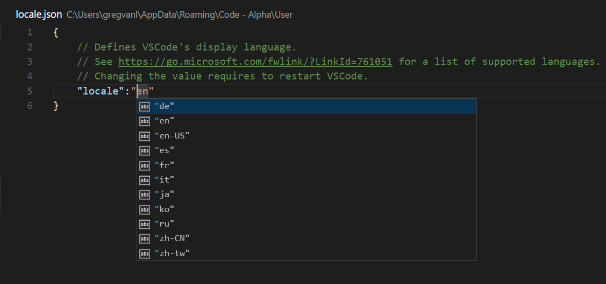

Visual Studio Code では10ヵ国語の言語パックを提供しています: 英語（米国）、簡体字中国語、繁体字中国語、フランス語、ドイツ語、イタリア語、日本語、韓国語、ロシア語、スペイン語です。なお、言語パックは VS Code に既に含まれるため、わざわざインストールし直す必要はありません。
表示言語を既定では OS の言語に設定しますが、言語がサポートされていない場合は英語(米国)が選択されます。
利用可能な言語
| Display Language | Locale |
|---|---|
| 英語(米国) | en |
| 簡体字中国語 | zh-CN |
| 繁体字中国語 | zh-TW |
| フランス語 | fr |
| ドイツ語 | de |
| イタリア語 | it |
| 日本語 | ja |
| 韓国語 | ko |
| ロシア語 | ru |
| スペイン語 | es |
言語設定
表示言語を変更したい場合は、コマンドラインで --local を使った起動で一時的に変更するか、Configure Language コマンドで永続的に変更します。次の例を確認してください。
起動オプション --locale オプションによるフランス語に設定する例:
|
言語設定のコマンド
Configure Language コマンドはCode\Userに locale.json を作成します。このファイルの locale 属性を上の Local に設定することにより言語を変更します。
⇧⌘P (Windows, Linux Ctrl+Shift+P) を押してコマンドパレットを表示したら。configと入力してconfigure Language でフィルターにかけます。

Enter を押すと locale.json と規定値をOSの言語で生成します。この値を IntelliSence(⌃Space (Windows, Linux Ctrl+Space)) を使ってサポートされている別の言語を選択します。

locale.json を保存したら VS Code を再起動して新しい表示言語を使用します。
VS Code 設定による簡体字中国語に設定する例:
|
また Configure Language を再度実行することで locale.json は再度呼び出すことが可能です。
Note: 変更した
localeの値を適用するには VS Code を再起動する必要があります。